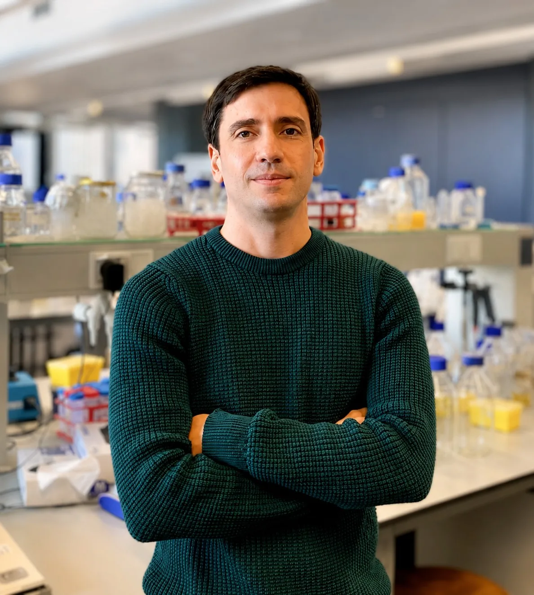
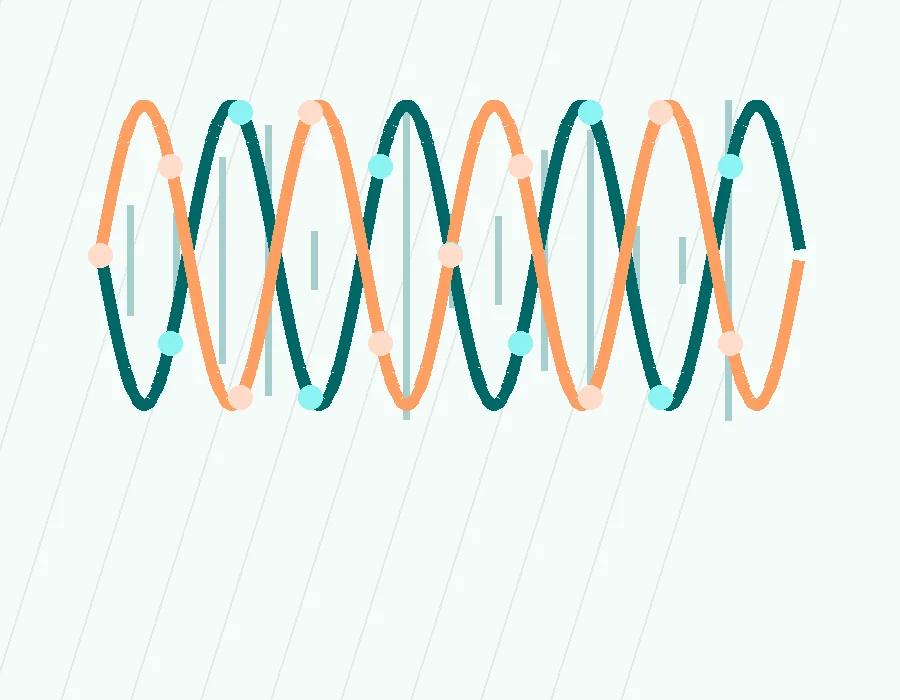

Emiliano D. Primo, PhD
Microbial Biotechnology Scientist
Emiliano D. Primo is a microbiologist and biotechnology researcher specialized in protein engineering, molecular biology, microbial biotechnology, and applied R&D.
He began his academic training at the National University of Río Cuarto (UNRC), Argentina, where he earned his degree in Microbiology. He later completed a PhD in Biological Sciences at the same institution, combining research with university teaching in molecular biology, microbiology, and bioinformatics.
Following his doctoral studies, he continued his scientific career in Europe as a Postdoctoral Researcher at UCLouvain, Belgium, where he worked on protein engineering, enzyme development, and innovation-oriented biotechnology. He later secured competitive FNRS funding to support three additional years of research at the same institution.
Throughout his career, he has combined academic science with applied innovation, including industry collaborations, technology transfer, process optimization, and the development of biotechnology solutions.
This platform was born from his long-standing passion for science, technology, and continuous learning, as well as his habit of closely following scientific journals and translating new discoveries into clear, concise, and accessible insights for a broader audience.

Areas of Expertise
- check_circleMicrobiology & Molecular Biology
- check_circleMicrobial Biotechnology
- check_circleProtein Engineering & Structural Biology
- check_circleBioinformatics
- check_circlePython for Scientific Data Analysis
- check_circleExperimental Design
- check_circleResearch Communication
Experience Highlights
Academic & Postdoctoral Research
UNRC & UCLouvain | Microbiology, molecular biology, protein engineering, and microbial biotechnology.
FNRS-Funded Research
Research position focused on applied life science innovation and translational biotechnology.
Teaching & Mentorship
University-level teaching in molecular biology, microbiology, and bioinformatics, with student mentoring and course development.
18
Peer-Reviewed Publications
school Education
-
National University of Río Cuarto (UNRC), Argentina
-
PhD in Biological Sciences
-
Degree in Microbiology